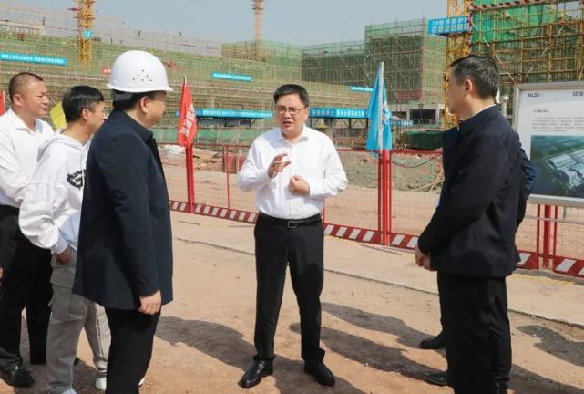

4月10日，区委书记唐小平调研重庆国际物流枢纽园区建设工作。他强
调，要深入贯彻习近平总书记对重庆所作重要讲话和系列重要示批示
精神，全面落实党中央决策部署和市委工作要求,坚持，从全局谋划一
域、以一域服务全局，积极融入、主动服务国家战略，深化改革创新，
加速产业集聚，扎实推进国际物流城“升级版”打造，在建设内陆开放
高地中展现更大的当和作为。 区委副书记、区长肖庆华，区委副书记
李鹏，区领导陈英、户邑、钟文参加。

正在建设的陆海新通道重庆无水港项目，涵盖大宗货物集散分拨、现货
及期货交割、供应链服务等功能，建成后将成为集“物流+贸易+产业+金
融”多位一体的国际性物流枢纽平台。唐小平详细了解了项目规划、工程
进展等情况。他强调，要加快推动项目建设，优化通关流程，降低交易成
本，提升综合服务能力，促进“铁空水公”四式联运融合发展。 在进口商品
展示中心，唐小平仔细察看了布展情况。他指出，要高起点立意，坚持虚
实结合、动静结合，理做好展品布局，充分运用数字化、智能化手段，营
造有美感、有品位的展示场景，全方位、立体化呈现内陆对外开放成果。 调
研中，唐小平还察看了园区重点道路沿线和五云湖、企业创新服务中心等重
要节点周边绿化情况。他强调，要精选植物搭配，把握好高低、疏密关系，
做好组团式栽种，强化日常管护，确保种出层次、栽出调性，彰显园区良
好的生态环境。 唐小平强调，要站在全局和战略的度，坚持跳出沙区看沙
、立足沙区抓沙区，抢抓重大战略机遇，做到规划、生态、基础、景观、配套“
五个先行”，聚智聚力打造国际物流城“升级版”。要坚持理念引领，围绕做
好“通道带物流、物流带经贸、经贸带产业”文章，与高校等科研机构联动，
组织专门力量开展深入研究，进一步明晰发展方向和发展路径。要强化问
题导向，做到“刀刃向内”，聚焦“提效率、降成本”、多式联运无缝衔接等，
大力推动改革创新，打造卓越营商环境，进一步完善功能、补齐短板，
更好促进高水平开放。要围绕通道优势，积极布局发展先进制造业，推动资源
整合、促进跨界融合，加快形成产业集群，不断培育壮大口岸经济。要完善园区
功能配套，健全基础设施，推动环境升级，促进产学研城景一体发展，实现国际范与
重庆味完美融合 |